Sycles shaders
Last update: 09.05.2018
Download:
How to use: Install as usual *.xsirtcompound. All new compounds will be available at the Cycles - Compounds category.
Description:
Basic shaders nodes:
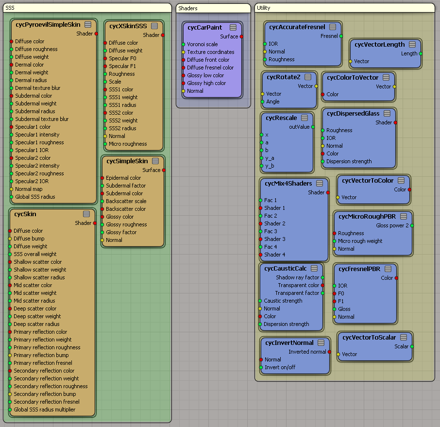PBR Node pack contains nodes from here.
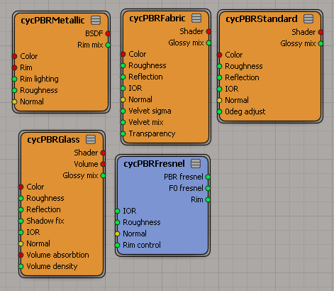PBR Uber-Shader contains nodes from here.
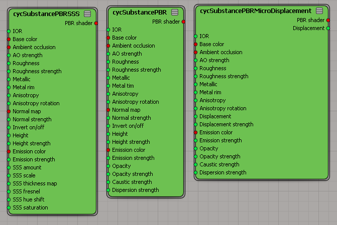Variety Node Pack is the port of this pack. It contains 8 shaders and 25 utility nodes for different purposes.
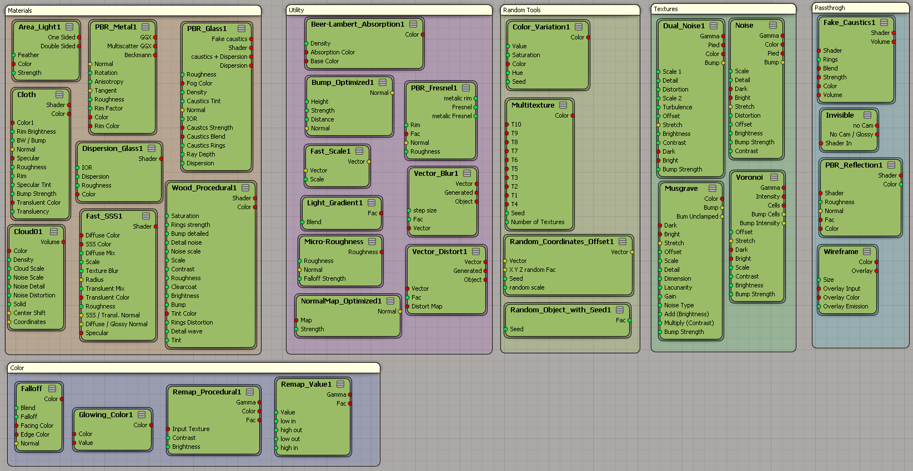Some renders and shader parameters:
Materials / Cloth 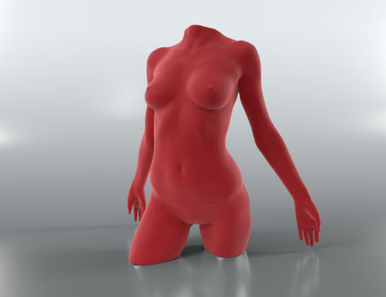 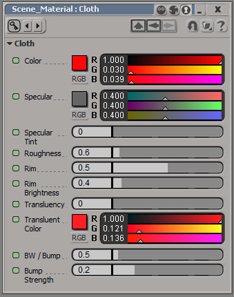 Materials / PBR Glass 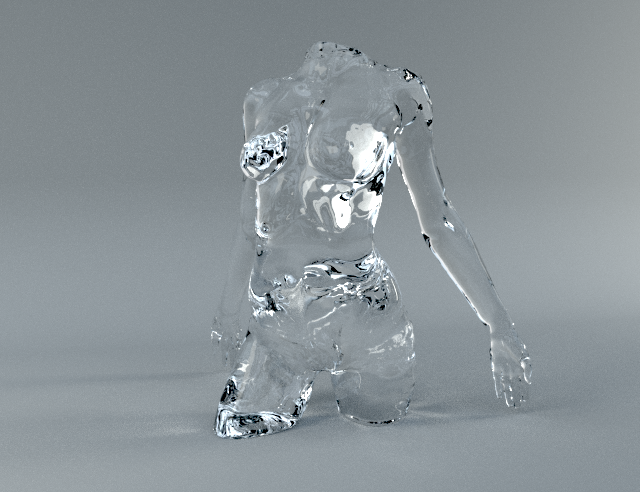 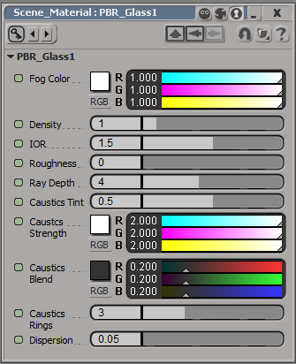 Materials / Dispersion Glass 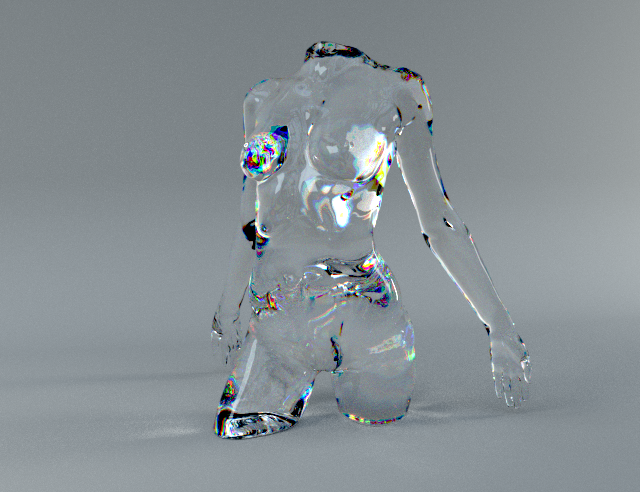 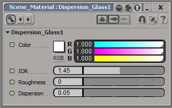 Materials / Fast Skin 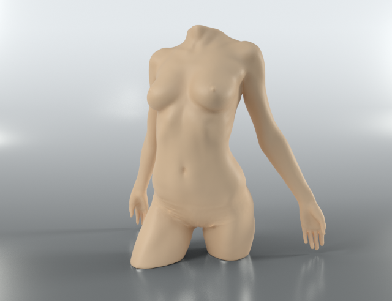 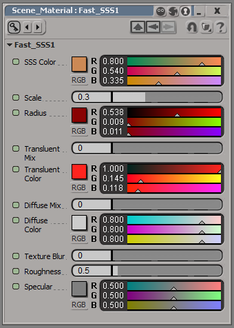 Materials / PBR Metal 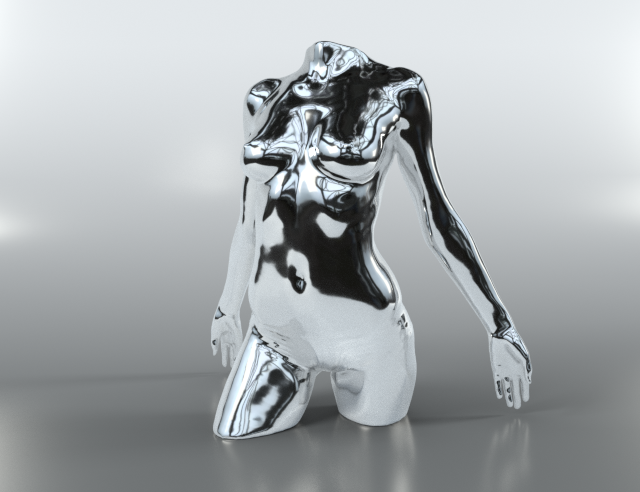 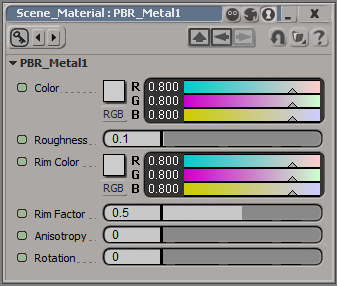 Materials / Wood Procedural 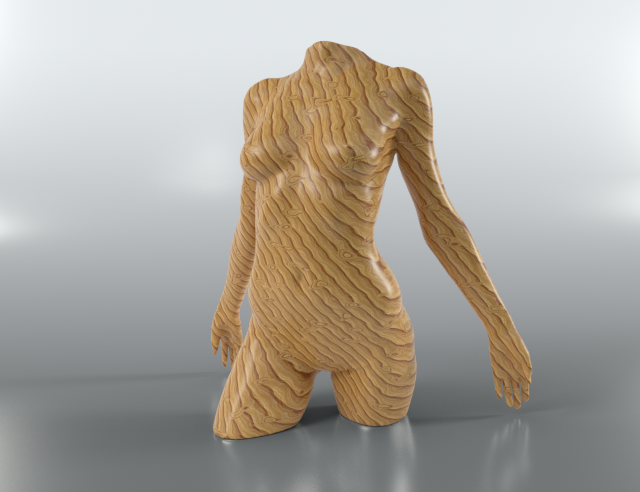 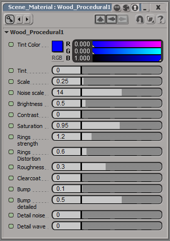 b°wide NodePack is a port of this pack. It contains 35 RTcompounds. Some renders of shaders:
Uber-Shaders / MultiShader 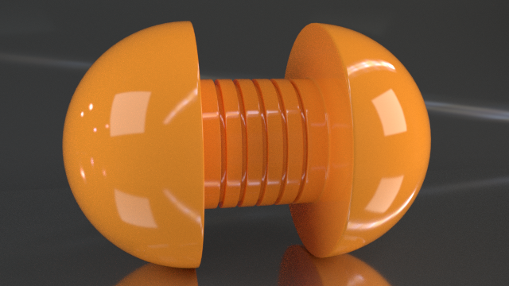 Uber-Shaders / DSBA Mixer 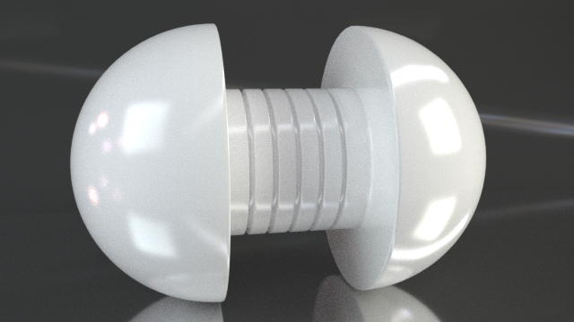 Shader / Car3Layer 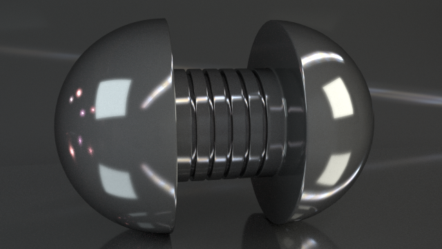 Shader / Carpet 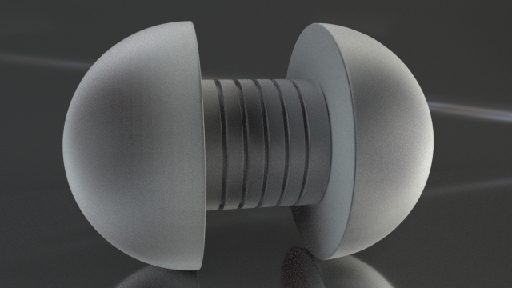 Shader / Ceramic 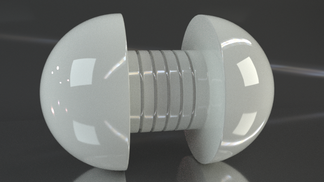 Shader / Fabric III 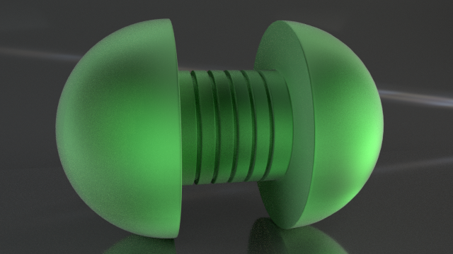 Shader / Galvanized Steel 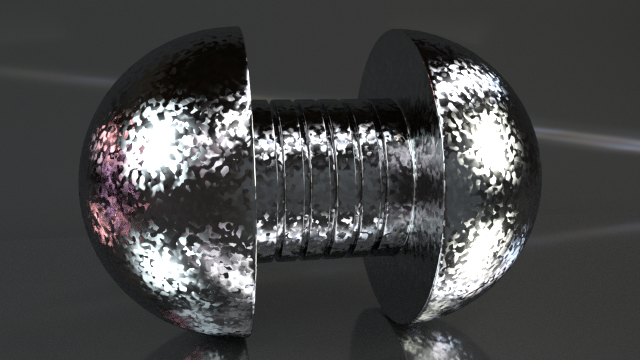 Shader / Glass Unified 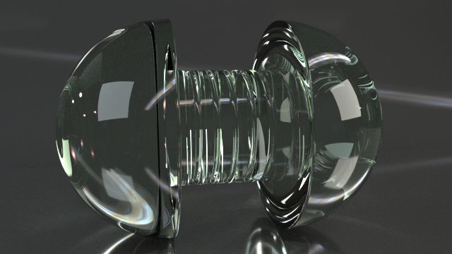 Shader / Leaf 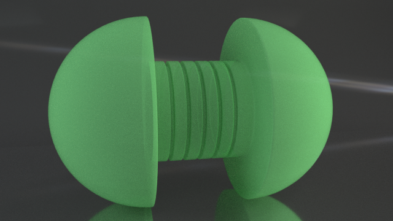 Shader / Paper 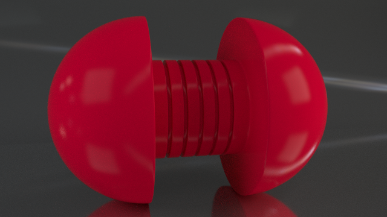 Shader / Plastic III 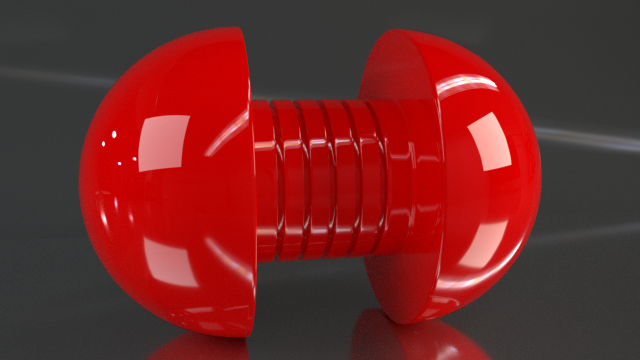 Shader / Soap Bubble 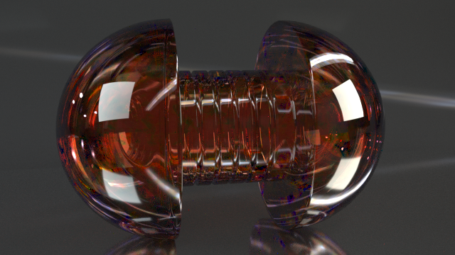 Shader / Wood 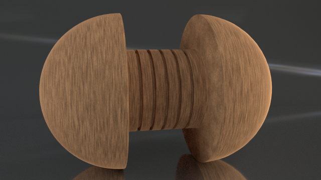